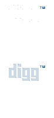

Digg · Popular · Latest · Submit a story · About · StartPeriod nav energy: digg · about · register · login · latest · front page. Categories class: technology · gaming · security · software · digg it · bury · comments · blog this.
Diggnation video-podcast culture rides the same 2005 wave as digg/bury on the front page.
Storage this year: itt05-digg-links (not the 2004 seed key).
iTunes podcast directory (Jun 28) is the other half of that culture.
Period reconstruction of Digg’s 2005 rise front page — digg it / bury, not modern redesign.